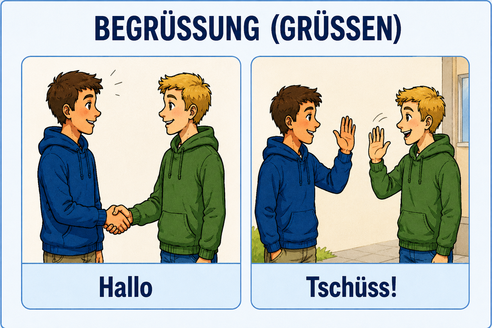
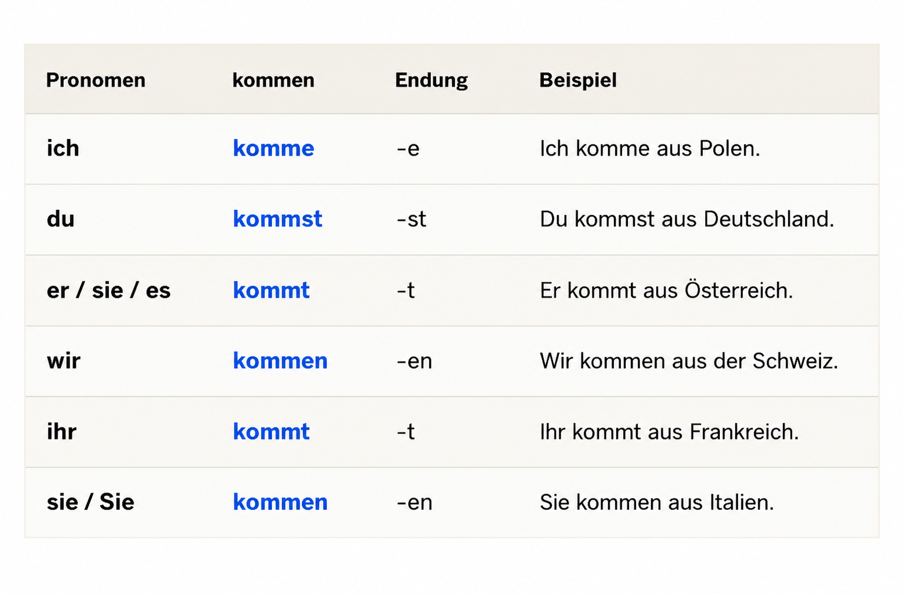

Herzlich willkommen!
Ich kann auf Deutsch:
- grüßen,
- mich vorstellen,
- das deutsche Alphabet sagen.
Komm mit und entdecke die deutsche Sprache Schritt für Schritt!
Bist du bereit?
Dann – los geht's!
1 – Erste Schritte (1–5)
- 1. Begrüßung, ich heiße ..., das Alphabet
- 2. Woher kommen Sie?
- 3. Wie alt sind Sie?
- 4. Was machen Sie beruflich?
- 5. Du oder Sie?
2 – Alltag (6–11)
- 6. Meine Familie
- 7. Wohnen
- 8. Essen und Trinken
- 9. Einkaufen
- 10. Uhrzeiten
- 11. Wochentage und Monate
1. Begrüßung, ich heiße ..., das Alphabet
Guten Morgen!
Guten Tag!
Guten Abend!
Hallo!
Tschüss!
Merke!
| Situation | Gruß | Wann wird er in Deutschland verwendet? |
|---|---|---|
| morgens | Guten Morgen! | ungefähr von 5:00/6:00 Uhr bis 10:00–11:00 Uhr |
| tagsüber | Guten Tag! | ungefähr von 10:00–11:00 Uhr bis 17:00–18:00 Uhr |
| abends | Guten Abend! | ungefähr von 17:00–18:00 Uhr bis spät am Abend |
| informell | Hallo! | zu jeder Tageszeit |
| beim Abschied | Tschüss! | zu jeder Tageszeit |


2. Ich stelle mich vor.
Hallo!
Ich heiße Anna.
Mein Name ist Anna Müller.
Ich bin Anna.

Informell
Hallo!
Wie heißt du?
Ich heiße ...
Formell
Guten Tag.
Wie heißen Sie?
Ich heiße ...
oder
Mein Name ist ...
Informell – Dialog 1
Hallo!
Wie heißt du?
Ich heiße Lena.
Und du?
Ich heiße Max.
Formell – Dialog 2
Guten Tag.
Wie heißen Sie?
Ich heiße Thomas.
Und Sie?
Ich heiße Julia.
3. Das deutsche Alphabet
Hört zu und sprecht nach.
Die Umlaute
Was kann ich jetzt?
✅ Ich kann grüßen.
Guten Morgen!
Guten Tag!
Guten Abend!
Hallo!
Tschüss!
✅ Ich kann mich vorstellen.
Ich heiße ...
Mein Name ist ...
Ich bin ...
✅ Ich kann nach dem Namen fragen.
Wie heißen Sie?
Wie heißt du?
✅ Ich kann das deutsche Alphabet sagen.
A, B, C, D ...
↑ Zurück zum Inhaltsverzeichnis
2. Woher kommen Sie.
Hallo, alle zusammen! Ich freue mich, euch wiederzusehen!
Heute lernen wir:
- Länder und Nationalitäten – Woher kommen Sie?
- Das Verb „kommen“ – Konjugation
- Zahlen 1–10
Bist du bereit? Wunderbar!
Woher kommen Sie?
Wenn wir nach der Herkunft fragen, sagen wir:
- Woher kommen Sie? – formell, mit Erwachsenen und Fremden.
- Woher kommst du? – informell, mit Freunden und Kindern.
Die Antwort ist immer:
Ich komme aus + Land.
Beispiele:
- Ich komme aus Polen.
- Ich komme aus Deutschland.
- Ich komme aus der Schweiz.
- Ich komme aus den USA.
Länder und Nationalitäten
Die Nationalität beschreibt, woher eine Person kommt.
- Ich bin Pole / Polin. – Ich komme aus Polen.
- Er ist Deutscher. – Er kommt aus Deutschland.
- Sie ist Österreicherin. – Sie kommt aus Österreich.
Wichtige Regel:
- Mann: Deutscher, Pole, Österreicher, Franzose …
- Frau: Deutsche, Polin, Österreicherin, Französin …
Die weibliche Form endet oft auf -in.
Das Verb „kommen“ – Konjugation
„Kommen“ ist ein regelmäßiges Verb.
Der Stamm ist komm-. Wir fügen die Endungen hinzu.
Diese Endungen gelten für viele regelmäßige Verben im Deutschen.

Merksatz:
-e · -st · -t · -en · -t · -en
Das gilt auch für:
wohnen, lernen, spielen, fragen, machen und viele weitere Verben..
Die Zahlen 1–10
Wir brauchen Zahlen für das Alter, Telefonnummern, Adressen und Preise.
Beispiele:
- Ich bin fünf Jahre alt.
- Meine Nummer ist drei, zwei, eins.
Wie alt sind Sie? – Ich bin ___ Jahre alt.
Wie ist Ihre Telefonnummer? – Meine Nummer ist …
Lies laut vor:
1, 3, 5, 7, 9 und 2, 4, 6, 8, 10.
Dialog
Lies den Dialog laut vor. Achte auf die Fragen und Antworten und verwende das Gelernte.
Lena:
Guten Morgen! Ich heiße Lena Wagner. Wie heißen Sie?
Tom:
Guten Morgen! Mein Name ist Tomek Nowak. Freut mich!
Lena:
Freut mich auch! Woher kommen Sie, Herr Nowak?
Tom:
Ich komme aus Polen, aus Warschau. Und Sie, Frau Wagner?
Lena:
Ich komme aus Deutschland, aus München.
Tom:
Interessant! Wie alt sind Sie, wenn ich fragen darf?
Lena:
Ich bin achtundzwanzig Jahre alt. Und Sie?
Tom:
Ich bin dreißig Jahre alt. Auf Wiedersehen, Frau Wagner!
Lena:
Tschüss, Herr Nowak! Bis morgen!
Das hast du heute gelernt!
- Fragen: Woher kommen Sie? / Woher kommst du?
- Antwort: Ich komme aus + Land.
- Länder: Deutschland, Polen, Österreich, die Schweiz, Frankreich …
- Verb „kommen“: komme · kommst · kommt · kommen · kommt · kommen
- Zahlen: eins, zwei, drei, vier, fünf, sechs, sieben, acht, neun, zehn.
↑ Zurück zum Inhaltsverzeichnis
3. Wie alt sind Sie?
Hallo und willkommen!
Heute lernen wir:
- Alter fragen und sagen
- Zahlen von 11 bis 100
- das Verb „sein“
- persönliche Daten
1. Wie alt sind Sie?
Fragen:
- Wie alt sind Sie?
- Wie alt bist du?
Antworten:
- Ich bin 25 Jahre alt.
- Ich bin 32 Jahre alt.
Übung:
Ich frage, Sie antworten.
Wie alt sind Sie?
2. Zahlen 11–100
11 elf
12 zwölf
13 dreizehn
14 vierzehn
15 fünfzehn
16 sechzehn
17 siebzehn
18 achtzehn
19 neunzehn
20 zwanzig
30 dreißig
40 vierzig
50 fünfzig
60 sechzig
70 siebzig
80 achtzig
90 neunzig
100 hundert
Beispiele:
- 21 einundzwanzig
- 35 fünfunddreißig
- 48 achtundvierzig
- 67 siebenundsechzig
- 99 neunundneunzig
3. Das Verb „sein“
ich bin
du bist
Sie sind
Beispiele:
- Ich bin Anna.
- Du bist Paul.
- Sie sind Herr Müller.
Ergänzen Sie:
- Ich ___ 30 Jahre alt.
- Sie ___ Lehrer.
- Du ___ müde.
4. Persönliche Daten
Wichtige Wörter:
- Name
- Vorname
- Adresse
- Telefonnummer
Fragen:
- Wie ist Ihr Name?
- Wie ist Ihr Vorname?
- Wie ist Ihre Adresse?
- Wie ist Ihre Telefonnummer?
Antworten:
- Mein Name ist Schmidt.
- Mein Vorname ist Anna.
- Meine Adresse ist …
- Meine Telefonnummer ist …
5. Dialog
Lesen und sprechen:
A: Guten Tag. Wie ist Ihr Name?
B: Mein Name ist Becker.
A: Wie ist Ihr Vorname?
B: Mein Vorname ist Julia.
A: Wie alt sind Sie?
B: Ich bin 28 Jahre alt.
6. Schreiben
Schreiben Sie:
Name:
Vorname:
Alter:
Adresse:
Telefonnummer:
Das hast du heute gelernt!
- Alter fragen und sagen
- Zahlen von 11 bis 100
- das Verb „sein“
- persönliche Daten
Bis zum nächsten Mal!
```↑ Zurück zum Inhaltsverzeichnis
4. Was machen Sie beruflich?
Guten Morgen und willkommen!
Wie geht es Ihnen?
Kurze Wiederholung:
- Wie heißen Sie?
- Wie alt sind Sie?
Heute lernen wir:
- Berufe
- Fragen: Was sind Sie von Beruf?
- ein / eine
- das Verb „arbeiten“
1. Berufe
- der Arzt – die Ärztin
- der Lehrer – die Lehrerin
- der Ingenieur – die Ingenieurin
- der Student – die Studentin
- der Verkäufer – die Verkäuferin
Beispiele:
- Ich bin Arzt.
- Ich bin Lehrerin.
- Ich bin Student.
2. Frage: Was sind Sie von Beruf?
Frage:
Was sind Sie von Beruf?
Antworten:
- Ich bin Lehrer.
- Ich bin Ärztin.
- Ich bin Ingenieur.
- Ich bin Student.
Dialog:
A: Was sind Sie von Beruf?
B: Ich bin Ingenieur.
3. ein / eine
Maskulin:
- ein Arzt
- ein Lehrer
- ein Ingenieur
Feminin:
- eine Ärztin
- eine Lehrerin
- eine Ingenieurin
Beispiele:
- Ich bin ein Lehrer.
- Ich bin eine Lehrerin.
Übung:
- Ich bin ___ Arzt.
- Ich bin ___ Lehrerin.
- Ich bin ___ Student.
- Ich bin ___ Studentin.
4. Das Verb „arbeiten“
Konjugation:
- Ich arbeite.
- Du arbeitest.
- Sie arbeiten.
Beispiele:
- Ich arbeite.
- Ich arbeite in Frankfurt.
- Ich arbeite im Büro.
Weitere Verben:
- lernen
- studieren
- wohnen
Beispiele:
- Ich lerne Deutsch.
- Ich studiere.
- Ich wohne in Frankfurt.
Übung:
- Ich ___ in Frankfurt.
- Ich ___ Deutsch.
- Ich ___ im Büro.
5. Dialog
A: Guten Tag.
B: Guten Tag.
A: Was sind Sie von Beruf?
B: Ich bin Verkäuferin.
A: Wo arbeiten Sie?
B: Ich arbeite in Frankfurt.
6. Sprechen
- Was sind Sie von Beruf?
- Wo arbeiten Sie?
- Lernen Sie Deutsch?
Abschluss
Sehr gut!
Heute haben wir gelernt:
- Berufe
- die Frage: Was sind Sie von Beruf?
- ein / eine
- das Verb „arbeiten“
Bis zum nächsten Mal!
↑ Zurück zum Inhaltsverzeichnis
5. Du oder Sie?
Hallo und willkommen!
Kurze Wiederholung:
- Wie heißen Sie?
- Was sind Sie von Beruf?
Heute lernen wir:
- Personalpronomen
- du und Sie
- Verben im Präsens
- Dialoge
1. Personalpronomen
Hören Sie zu und sprechen Sie nach:
- ich
- du
- er
- sie
- es
- wir
- ihr
- Sie
Beispiele:
- Ich bin Anna.
- Du bist Paul.
- Er ist Lehrer.
- Sie ist Ärztin.
- Wir lernen Deutsch.
- Ihr arbeitet viel.
- Sie sind freundlich.
2. Du oder Sie?
du verwenden wir:
- für Freunde,
- für die Familie,
- für Kinder.
Sie verwenden wir:
- für fremde Personen,
- im Beruf,
- in höflichen Situationen.
Beispiele:
Formal:
- Wie heißen Sie?
- Wo wohnen Sie?
Informell:
- Wie heißt du?
- Wo wohnst du?
3. Verben im Präsens
Beispiel: lernen
- ich lerne
- du lernst
- er/sie/es lernt
- wir lernen
- ihr lernt
- Sie lernen
Beispiel: arbeiten
- ich arbeite
- du arbeitest
- er/sie/es arbeitet
- wir arbeiten
- ihr arbeitet
- Sie arbeiten
Ergänzen Sie:
- ich ________ (lernen)
- du ________ (arbeiten)
- wir ________ (lernen)
- Sie ________ (arbeiten)
4. Dialoge
Dialog 1 (formal)
A: Guten Tag. Wie heißen Sie?
B: Ich heiße Müller.
A: Wo wohnen Sie?
B: Ich wohne in Frankfurt.
Dialog 2 (informell)
A: Hallo! Wie heißt du?
B: Ich heiße Tom.
A: Wo wohnst du?
B: Ich wohne in Berlin.
5. Sprechen
Antworten Sie:
- Wie heißen Sie?
- Wo wohnen Sie?
- Was machen Sie?
Jetzt mit „du“:
- Wie heißt du?
- Wo wohnst du?
- Was machst du?
Abschluss
Sehr gut!
Heute haben wir gelernt:
- Personalpronomen,
- du und Sie,
- Verben im Präsens,
- Dialoge.
Bis zum nächsten Mal!
↑ Zurück zum Inhaltsverzeichnis
6. Meine Familie
Hallo und willkommen!
Kurze Wiederholung
- Wie heißen Sie?
- Was sind Sie von Beruf?
Heute lernen wir:
- Familie
- mein / meine, dein / deine
- Familie beschreiben
- Plural (Mehrzahl)
1. Familie – Wörter
- die Mutter
- der Vater
- die Schwester
- der Bruder
- die Eltern
- die Großeltern
- die Großmutter
- der Großvater
- das Kind
- die Kinder
Beispiele:
Das ist meine Mutter.
Das ist mein Vater.
2. mein / meine, dein / deine
mein:
- der Vater → mein Vater
- der Bruder → mein Bruder
- das Kind → mein Kind
meine:
- die Mutter → meine Mutter
- die Schwester → meine Schwester
dein / deine:
- dein Vater
- deine Mutter
Beispiele:
Das ist mein Bruder.
Das ist meine Schwester.
Ist das dein Vater?
Ist das deine Mutter?
Übung:
Ergänzen Sie:
- Das ist ___ Mutter.
- Das ist ___ Vater.
- Das ist ___ Schwester.
- Das ist ___ Bruder.
3. Familie beschreiben
Beispiele:
- Ich habe eine Familie.
- Ich habe eine Mutter und einen Vater.
- Ich habe zwei Brüder.
- Meine Mutter heißt Anna.
- Mein Vater arbeitet.
Übung:
Sprechen Sie:
- Ich habe …
- Meine Mutter …
- Mein Vater …
4. Plural (Mehrzahl)
Singular → Plural:
- die Mutter → die Mütter
- der Vater → die Väter
- die Schwester → die Schwestern
- der Bruder → die Brüder
- das Kind → die Kinder
Beispiele:
Ich habe zwei Brüder.
Ich habe drei Kinder.
Übung:
Ergänzen Sie:
- ein Bruder → zwei ______
- eine Schwester → zwei ______
- ein Kind → zwei ______
5. Dialog
Lesen und sprechen:
A: Hast du Geschwister?
B: Ja, ich habe eine Schwester.
A: Wie heißt sie?
B: Sie heißt Maria.
Noch ein Dialog:
A: Hast du Kinder?
B: Ja, ich habe zwei Kinder.
6. Sprechen
- Haben Sie Kinder?
- Haben Sie Geschwister?
- Wie heißt Ihre Mutter?
- Wie heißt Ihr Vater?
Abschluss
Sehr gut!
Heute haben wir gelernt:
- Familie
- mein / meine, dein / deine
- Familie beschreiben
- Plural
Bis zum nächsten Mal!
```↑ Zurück zum Inhaltsverzeichnis
7. Wohnen
↑ Zurück zum Inhaltsverzeichnis
8. Essen und Trinke
↑ Zurück zum Inhaltsverzeichnis
9. Einkaufen
↑ Zurück zum Inhaltsverzeichnis
10. Uhrzeiten
↑ Zurück zum Inhaltsverzeichnis